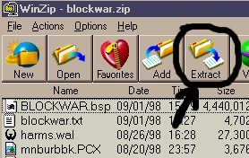
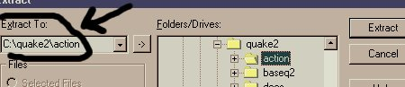

|
Q:
I can't find locknload or coventry, where are they?
A: The
two maps have been zipped together and can be found in our map
archive as cov_lockn.zip, or just click here. There has also been a
Lock 'n Load Trilogy released by the_HUNTER, which consists of
three maps set to the Lock 'n Load theme, titled lnl_tri.zip
available in the map archives. Click here to download it.
Q:
Where is the facility map (facility.bsp)? Will you send it to
me?
A: This
map was pulled by the author quite a while ago due to copyright
infringements. Apparently, it was a direct ripoff of a goldeneye
map. We in no way endorse it. Some servers are sill running it,
but make no mistake, we don't have it, and thus can't send it
to anyone.
Q:
I think [insert map name here] is crap, why did you put it up?
A: AQMD
and its map testers put up what they think to be the good, best
maps. One you may hate may be another person's favorite map.
Our job is to simply put up the good maps and it is your job
to decide whether you like it or not. You are not forced to play
or download any maps. Remember the cliche "one man's rubbish
is another man's treat" or something quite like that.
Q:
How do you select which maps to post?
A: First,
the map submissions are tested by Death Magnet, known as, "Death
Testing" to see if they meet our Minimum Map Requirements
(correct dir/folder names, zip structure, r_speeds, etc). Maps
that make it past Death Magnet are then added to the Staging
Area. Action players are encouraged to download the test maps
and fill out a questionnaire
in the Test Matrix. The results are tallied after a week or so
and a determination is made as to if the map should be released
or sent back to the author for a revision. Failing maps have
a two weeks to either be fixed by the mapper or we pull them
out of the Staging Area.
Q:
I sent in my map, but it's not posted, what the f__?
A: First
of all, give us time. But then if it's not posted within 7-10
days, ask us.
Q:
Do you need any help with the site? I'd like to become a staff
member at AQMD.
A: If
we ever need any help with the site, we'll tell you. But we usually
have everything handled just fine. The way to help us out most
is to fill out questionnaires for the maps in the Test Matrix.
This more results we receive, the quicker the map is released.
Q:
Where should I send my action map?
A: When
you're ready to submit your Action map, head on over to the Submit Map: Requirements page.
It has all the information you need when sending in your map.
Please make sure to upload the map to AQMD and NOT to any of
the Staffers' personal e-mail accounts. This will only make us
mad and ensure your map its very own place in our trash bin.
Q:
Can you give me advice on mapmaking?
A: No.
Drop by the Forum.
Many talented mappers hang out there and will help you out.
Q:
Why does everything seem to center around r_speeds? My map seems
to play fine on my machine.
A: Maps
are usually created for play not only over a LAN, but online.
R_speeds deal with the number of polygons your video card and
graphic accelerator has to draw. Here is an excellent article
which was posted to the forums dealing with r_speeds. It is a
very complete and indepth article, any questions direct them
our way or check the Map Resources area.
Q:
Can just anyone submit map reviews?
A: Absolutely.
And we encourage anyone and everyone to submit map reviews. Just
remember to make them well thought out, descriptive, in-depth,
and constructive. Flaming WILL NOT be tolerated and will result
in the review being "round filed".
Q:
Who the hell runs the depot?
A: Negative
Creep began as the Head Webmaster of AQMD. Currently Death Magnet
reigns supreme over and relies heavily on his experienced group
of Staffers to keep this beast up to speed. Remember, AQMD is
a free service, none of receive any compensation for what we
do at AQMD (though we could all use any $$$ if ya have any to
spare - :-), we maintain the site in addition to dealing with
the crap that RL throws our way.
Q:
Can I be a tester for AQMD?
A: Currently,
all maps submitted which pass Death testing are available for
download over the Test Matrix. Please remember that these are
are just that, a test. When you are finished testing the map,
fill out the questionnaire, as this will help to speed the testing
process and release of good maps.
Q:
I'm making an action map and it runs fine in regular Quake2 but
crashes in Action, wtf?
A: Action
is a deathmatch only mod. Thus, you need to put info_player_deathmatch
entities in.
Q:
What's the difference between making a regular Quake2 map and
an Action map?
A: Visit
the making maps page. It has all the
information you need on this subject.
Q:
How do I walk through an Action map by myself (when not joining
a server)?
A: Boot
up Action and at the console type "map <map name.bsp>"
with no quotes where map name.bsp is the map name. For example,
to check out Actcity2, type "map actcity2" at the console
with no quotes. You can also launch AQ2 and a specific map from
Win95/98's Start/Run window - here's an example of the command
line, note that my system has Quake 2 and Action Quake Mod on
my D drive:
d:\quake2\quake2.exe
+set game action +map actcity2
Q:
How do I install and use the action maps once I've downloaded
them from here?
A: Open
up the zips in Winzip and extract them to your action directory
(|not| your quake2 directory), like such:

Then
browse to your action directory, then press extract, as shown:

Q:
Where can I find prefabs and skies for my Action map?
A: For
all your prefab needs, visit skies
and prefabs
at AQMD's
Map Resources Section.
If ya can't find what you want there, check out The Quake2 Prefab Park or send email
to FiReWaLKeR[TDm], as he handles the map resources.
Q:
What do I use to make my own textures for my map?
A: It
is accepted that the best q2 texture utility is Wally.
Q:
I want to start making action maps, which map editor should I
use?
A: This,
like many things, is personal preference. There is no "best
editor." The best way to get this kind of info and a helping
hand is to post a request for help on our Forum.
There are a lot of VERY experienced mappers there who would be
willing to help or give you advice.
Q:
Where can I find [insert map name here]?
A: If
it's not posted here, we don't have it. If there is a great map
we're missing, please don't hesitate to send it in. You can also
stop by the Mapzone
for some of the maps that we cannot post due to illegal textures
and the like.
Q:
Where can I find skins for AQ2?
A: Our
Sister site, The Actor's
Guild,
is the Official site for AQ2 skins check them out for the latest
skins, weapons, crosshairs, sound files, etc.
Q:
I think [insert silly weapon here] would be a good addition to
the Action mod, can you put it in?
A: We
get this a lot. Remember, we're the map site. We did not code
the mod, we only run the maps site. Contact the folks over at
AQ2
regarding these types of questions.
Q:
What are map packs? Why are there no up to date map packs available?
A: Map
packs are just what the titles says, a pack of maps are the more
popular and regularly played maps over the internet. Currently
there are four map packs available. Chances are, there will not
be another other map packs created. Each time Death Magnet releases
new maps in large groups, they are usually available this way.
Q:
I think the depot is crap, do you care?
A: No.
Why should we? We do what we can.
Q:
I'm looking for [insert older map name here] but can't find it
anymore, where the f___ is it?
A: All
older maps that are no longer on the "latest maps"
section of the main page are put in the map
archive,
even the original maps that were at the official action site.
Please look here, many people don't bother to go to the archive
and end up looking silly asking for the map on the message board.
If you do not see it there, email us |